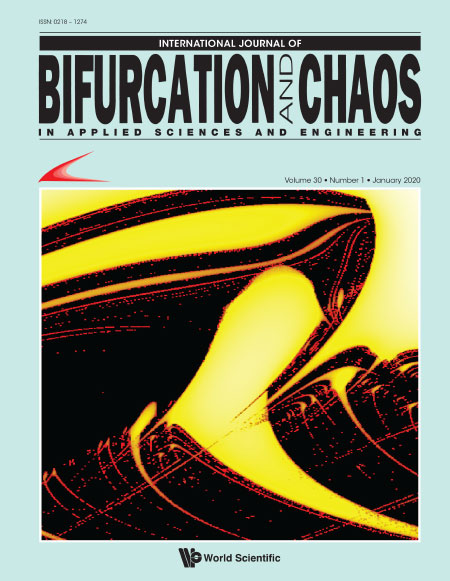

During my academic journey, I have published papers in different journals, in a variety of fields, always related with my scientific research. The complete list can also be seen in Google Sholar.
These papers are listed below, where I separated according to the respective research.
In my postdoctorate, I worked with time series analysis with Dr. Holokx A. Albuquerque. However, different from my master’s research, at this time we built analogic electronic circuits to study the chaotic behavior of systems under different parameters, and correlated the results with numerical simulations. Many interesting results are still waiting to be published. other results were published and are listed below.
Tracking multistability in the parameter space of a Chua’s circuit model
The European Physical Journal B - 2019
Characterizing the Dynamics of the Watt Governor System Under Harmonic Perturbation and Gaussian Noise
International Journal of Bifurcation and Chaos - 2020
Particularly, the last publication is a Featured Article, and the cover of correspondig issue presented below.

In my PhD research, on the other hand, I worked in the Group of Organic Optoelectronic Devices, under supervision of Dr. Ivo A. Hümmelgem. This was an experimental research with organic and inorganic solar cells. I worked with development and characterization of thin films and devices. This work was a mix between theory and experimental. The results are published in the following papers:
Morphological, optical and electrical properties of GaSe9 films and its application in photovoltaic devices
Journal of Materials Science: Materials in Electronics - 2017
Influence of an interfacial cesium oxide thin layer in the performance and internal dynamic processes of GaSe9 solar cells
Solar Energy Materials and Solar Cells - 2017
Enhancement of P3HT organic photodiodes by the addition of a GaSe9 alloy thin layer
Semiconductor Science and Technology - 2017
GaxSe10-x based solar cells: Some alternatives for the improvement in their performance parameters
Solar Energy Materials and Solar Cells - 2019
In my MS research, I worked under supervision of Dr. Holokx A. Albuquerque. My research was related to chaos theory and time series analysis. Particularly, I worked with bifurcation curves and Lyapunov exponents in chaotic dynamical systems. The following papers resulted from these researchs:
Bifurcation structures and transient chaos in a four-dimensional Chua model
Physics Letters A - 2014
Numerical bifurcation analysis of two coupled FitzHugh-Nagumo oscillators
The European Physical Journal B - 2014
Extensive numerical study and circuitry implementation of the Watt governor model
International Journal of Bifurcation and Chaos - 2017